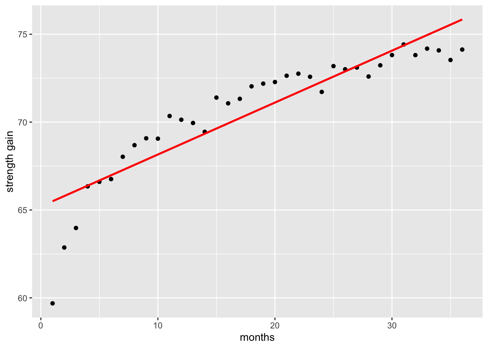
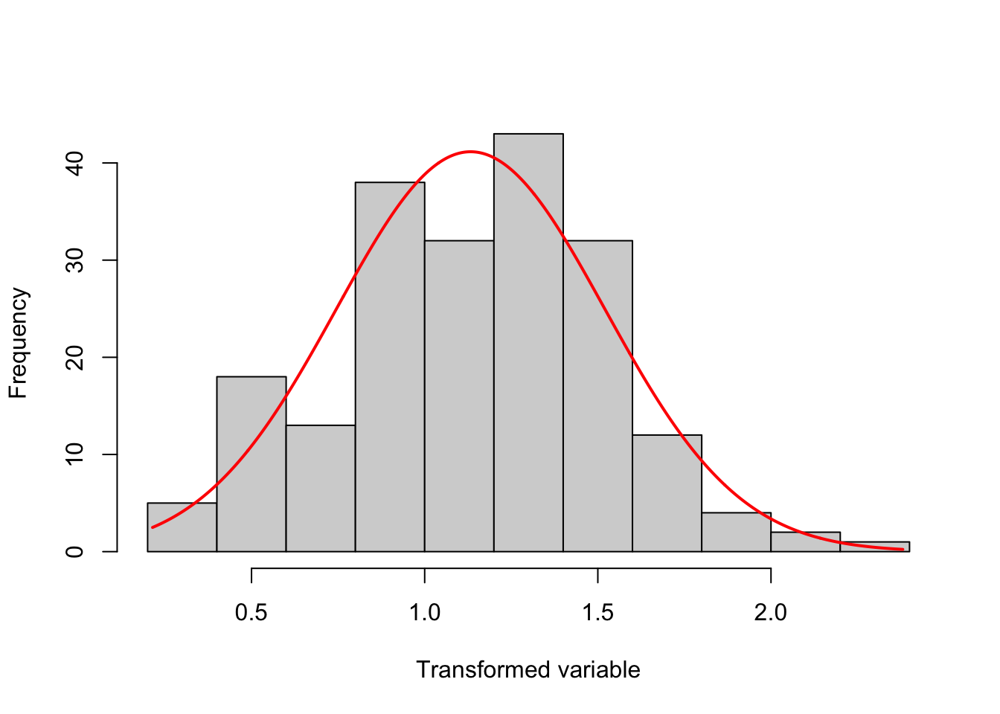

# load packages
library(tidyverse) # tidy and wrangle data
library(broom) # create tidy tables for statistical objects
library(effectsize) # calculate effect size
library(kableExtra) # create tidy tables
library(tibble) # create tables
library(rcompanion) # perform Tukey's ladder of power
library(pscl)
library(emmeans) # multiple comparisons3 Lecture 4
Load packages
Load data
grade GPA lecture nclicks
1 2.395139 1.1341088 6 88
2 3.665159 0.9708817 6 96
3 2.852750 3.3432350 6 123
4 1.359700 2.7595763 9 99
5 2.313335 1.0222222 4 66For learning purposes, we will add two new variables: sport, which is categorical, and study_time which is numerical.
# create a categotical variable
grades$sport <- as.factor(rep(c("team",
"individual"),
each = 50))
# ensure reproducibility for the below simulation
set.seed(101301)
# create a variable "study_time" that is highly correlated with "grade"
grades$study_time <- 0.9 * grades$grade + rnorm(nrow(grades), mean = 6, sd = 1)
head(grades, 5) grade GPA lecture nclicks sport study_time
1 2.395139 1.1341088 6 88 team 7.953380
2 3.665159 0.9708817 6 96 team 9.373033
3 2.852750 3.3432350 6 123 team 6.038151
4 1.359700 2.7595763 9 99 team 7.685146
5 2.313335 1.0222222 4 66 team 8.3815703.1 Marginal means and pairwise comparisons
When we fit a model in R with a categorical predictor, by default, R uses dummy (treatment) coding, where the reference level is compared to all the other levels of the factor. Each coefficient in the model output represents the difference in the outcome variable between the reference level and one of the other levels.
However, we often want to go beyond these default comparisons. For example, we might want to:
- Compare specific pairs of levels (not just against the reference);
- Test whether two levels differ across levels of another factor;
- Perform custom contrasts.
These comparisons are not done automatically. To perform them, we can use the emmeans package, which offers functions to:
- Estimate marginal means;
- Conduct pairwise comparisons across all levels of a factor;
- Specify custom comparisons between levels or combinations of levels.
In a 3 x 3 factorial design, there are six cell means, six marginal means, one grand mean and 15 possible pairwise comparisons.
tibble(
Percentage = c("10", "20", "30", ""),
Soya = c("cell mean", "cell mean", "cell mean", "Marginal_means"),
Milk = c("cell mean", "cell mean", "cell mean", "Marginal_means"),
Almond = c("cell mean", "cell mean", "cell mean", "Marginal_means"),
. = c("Marginal_means", "Marginal_means", "Marginal_means", "Grand_mean"),
) |>
kable(caption = "3 x 3 Factorial design",
format = "html",
booktabs = TRUE,
escape = TRUE) |>
kable_styling() |>
row_spec(0, extra_css = "text-align: center;") |>
column_spec(1:4, extra_css = "text-align: center;")| Percentage | Soya | Milk | Almond | . |
|---|---|---|---|---|
| 10 | cell mean | cell mean | cell mean | Marginal_means |
| 20 | cell mean | cell mean | cell mean | Marginal_means |
| 30 | cell mean | cell mean | cell mean | Marginal_means |
| Marginal_means | Marginal_means | Marginal_means | Grand_mean |
For k means, the number of pairwise comparisons is:
\[ {k \choose 2} \frac{k(k - 1)}{2} \]
So with 9 cell means, the number of pairwise comparisons is:
\[ {9 \choose 2} \frac{9(9 - 1)}{2} = 36 \]
Let’s simulate data for one dependent variable muscle_mass and two three-level categorical predictors drink and percentage- the latter referring to the percentage of protein in each type of drink.
# for reproducibility
set.seed(123)
# Define levels
drink <- c("soya", "milk", "almond")
percentage <- c("10", "20", "30")
# Create full 3×3 design with 15 observations per group
data <- expand.grid(drink = drink,
percentage = percentage,
rep = 1:15)
# Generate heart rate (hr) with different means per group
data$muscle_mass <- with(data,
rnorm(
n = nrow(data),
mean = ifelse(drink == "milk", 3,
ifelse(drink == "almond", 1, 0)) +
ifelse(percentage == "10", 0,
ifelse(percentage == "20", 1, 3)),
sd = 2
)
)
head(data) drink percentage rep muscle_mass
1 soya 10 1 -1.120951
2 milk 10 1 2.539645
3 almond 10 1 4.117417
4 soya 20 1 1.141017
5 milk 20 1 4.258575
6 almond 20 1 5.430130Let’s fit the model:
# A tibble: 5 × 5
term estimate std.error statistic p.value
<chr> <dbl> <dbl> <dbl> <dbl>
1 (Intercept) 0.124 0.345 0.359 7.20e- 1
2 drinkmilk 2.56 0.378 6.76 4.30e-10
3 drinkalmond 0.385 0.378 1.02 3.10e- 1
4 percentage20 1.30 0.378 3.45 7.68e- 4
5 percentage30 3.39 0.378 8.96 2.94e-15Let’s compute the marginal means for the drink variable:
emmeans(model, specs = "drink") drink emmean SE df lower.CL upper.CL
soya 1.69 0.268 130 1.16 2.22
milk 4.25 0.268 130 3.72 4.78
almond 2.07 0.268 130 1.54 2.60
Results are averaged over the levels of: percentage
Confidence level used: 0.95 We can do the same for percentage:
emmeans(model, specs = "percentage") percentage emmean SE df lower.CL upper.CL
10 1.10 0.268 130 0.575 1.63
20 2.41 0.268 130 1.879 2.94
30 4.50 0.268 130 3.967 5.03
Results are averaged over the levels of: drink
Confidence level used: 0.95 We can also do:
emmeans(model, specs = "drink", by = "percentage")percentage = 10:
drink emmean SE df lower.CL upper.CL
soya 0.124 0.345 130 -0.560 0.807
milk 2.681 0.345 130 1.997 3.364
almond 0.509 0.345 130 -0.174 1.193
percentage = 20:
drink emmean SE df lower.CL upper.CL
soya 1.428 0.345 130 0.744 2.111
milk 3.985 0.345 130 3.301 4.668
almond 1.813 0.345 130 1.130 2.497
percentage = 30:
drink emmean SE df lower.CL upper.CL
soya 3.516 0.345 130 2.832 4.199
milk 6.072 0.345 130 5.389 6.756
almond 3.901 0.345 130 3.217 4.584
Confidence level used: 0.95 The second part of the output, called contrasts, contains the comparisons of interest. It is this section that we are generally most interested in when answering a question about differences among groups. You can see which comparison is which via the contrastcolumn.
By default, emmeans() calculates all pairwise comparisons.
contrast estimate SE df t.ratio p.value
soya - milk -2.557 0.378 130 -6.756 <.0001
soya - almond -0.385 0.378 130 -1.018 0.5668
milk - almond 2.171 0.378 130 5.738 <.0001
Results are averaged over the levels of: percentage
P value adjustment: tukey method for comparing a family of 3 estimates The emmeans() package automatically adjusts for multiple comparisons. Since we did all pairwise comparisons the package used a Tukey adjustment. The adjust argument can be used to change the type of multiple comparisons adjustment. All available options are listed and described in the documentation for summary.emmGrid under the section P-value adjustments. For instance, one option is to skip multiple comparisons adjustments all together, using adjust = "none" The comparisons are accompanied by statistical tests of the null hypothesis of “no difference”, but lack confidence interval (CI) by default. You can add the 95% CI using confint():
contrast estimate SE df lower.CL upper.CL
soya - milk -2.557 0.378 130 -3.45 -1.659
soya - almond -0.385 0.378 130 -1.28 0.512
milk - almond 2.171 0.378 130 1.27 3.069
Results are averaged over the levels of: percentage
Confidence level used: 0.95
Conf-level adjustment: tukey method for comparing a family of 3 estimates We can also compare each level of drink for each level of percentage:
em <- emmeans(model, specs = "drink", by = "percentage")
# or, alternatively:
# emmeans(model, specs = "drink", by = "percentage")
pairs(em)percentage = 10:
contrast estimate SE df t.ratio p.value
soya - milk -2.557 0.378 130 -6.756 <.0001
soya - almond -0.385 0.378 130 -1.018 0.5668
milk - almond 2.171 0.378 130 5.738 <.0001
percentage = 20:
contrast estimate SE df t.ratio p.value
soya - milk -2.557 0.378 130 -6.756 <.0001
soya - almond -0.385 0.378 130 -1.018 0.5668
milk - almond 2.171 0.378 130 5.738 <.0001
percentage = 30:
contrast estimate SE df t.ratio p.value
soya - milk -2.557 0.378 130 -6.756 <.0001
soya - almond -0.385 0.378 130 -1.018 0.5668
milk - almond 2.171 0.378 130 5.738 <.0001
P value adjustment: tukey method for comparing a family of 3 estimates We can also compute all pairwise comparisons allowed by the study design:
contrast estimate SE df t.ratio p.value
soya percentage10 - milk percentage10 -2.5567 0.378 130 -6.756 <.0001
soya percentage10 - almond percentage10 -0.3853 0.378 130 -1.018 0.9835
soya percentage10 - soya percentage20 -1.3040 0.378 130 -3.446 0.0212
soya percentage10 - milk percentage20 -3.8607 0.535 130 -7.213 <.0001
soya percentage10 - almond percentage20 -1.6893 0.535 130 -3.156 0.0498
soya percentage10 - soya percentage30 -3.3916 0.378 130 -8.962 <.0001
soya percentage10 - milk percentage30 -5.9483 0.535 130 -11.114 <.0001
soya percentage10 - almond percentage30 -3.7769 0.535 130 -7.057 <.0001
milk percentage10 - almond percentage10 2.1714 0.378 130 5.738 <.0001
milk percentage10 - soya percentage20 1.2528 0.535 130 2.341 0.3260
milk percentage10 - milk percentage20 -1.3040 0.378 130 -3.446 0.0212
milk percentage10 - almond percentage20 0.8674 0.535 130 1.621 0.7918
milk percentage10 - soya percentage30 -0.8349 0.535 130 -1.560 0.8244
milk percentage10 - milk percentage30 -3.3916 0.378 130 -8.962 <.0001
milk percentage10 - almond percentage30 -1.2202 0.535 130 -2.280 0.3620
almond percentage10 - soya percentage20 -0.9186 0.535 130 -1.716 0.7354
almond percentage10 - milk percentage20 -3.4754 0.535 130 -6.493 <.0001
almond percentage10 - almond percentage20 -1.3040 0.378 130 -3.446 0.0212
almond percentage10 - soya percentage30 -3.0063 0.535 130 -5.617 <.0001
almond percentage10 - milk percentage30 -5.5630 0.535 130 -10.394 <.0001
almond percentage10 - almond percentage30 -3.3916 0.378 130 -8.962 <.0001
soya percentage20 - milk percentage20 -2.5567 0.378 130 -6.756 <.0001
soya percentage20 - almond percentage20 -0.3853 0.378 130 -1.018 0.9835
soya percentage20 - soya percentage30 -2.0876 0.378 130 -5.516 <.0001
soya percentage20 - milk percentage30 -4.6444 0.535 130 -8.678 <.0001
soya percentage20 - almond percentage30 -2.4730 0.535 130 -4.621 0.0003
milk percentage20 - almond percentage20 2.1714 0.378 130 5.738 <.0001
milk percentage20 - soya percentage30 0.4691 0.535 130 0.876 0.9938
milk percentage20 - milk percentage30 -2.0876 0.378 130 -5.516 <.0001
milk percentage20 - almond percentage30 0.0838 0.535 130 0.156 1.0000
almond percentage20 - soya percentage30 -1.7023 0.535 130 -3.181 0.0465
almond percentage20 - milk percentage30 -4.2590 0.535 130 -7.958 <.0001
almond percentage20 - almond percentage30 -2.0876 0.378 130 -5.516 <.0001
soya percentage30 - milk percentage30 -2.5567 0.378 130 -6.756 <.0001
soya percentage30 - almond percentage30 -0.3853 0.378 130 -1.018 0.9835
milk percentage30 - almond percentage30 2.1714 0.378 130 5.738 <.0001
P value adjustment: tukey method for comparing a family of 9 estimates Note that there are 36 pairwise comparisons which is the same number we previously determined.
Or only perform comparisons of interest, such as performing comparisons against a reference level. Suppose we are only interested in comparing all types of drinks and percentages against “milk with 20% protein content.
em <- emmeans(model, ~ drink*percentage)
contrast(
em,
method = "trt.vs.ctrl",
ref = which(emm@grid$drink == "milk" & emm@grid$percentage == "20")
) contrast estimate SE df t.ratio p.value
soya percentage10 - milk percentage20 -3.8607 0.535 130 -7.213 <.0001
milk percentage10 - milk percentage20 -1.3040 0.378 130 -3.446 0.0056
almond percentage10 - milk percentage20 -3.4754 0.535 130 -6.493 <.0001
soya percentage20 - milk percentage20 -2.5567 0.378 130 -6.756 <.0001
almond percentage20 - milk percentage20 -2.1714 0.378 130 -5.738 <.0001
soya percentage30 - milk percentage20 -0.4691 0.535 130 -0.876 0.8841
milk percentage30 - milk percentage20 2.0876 0.378 130 5.516 <.0001
almond percentage30 - milk percentage20 -0.0838 0.535 130 -0.156 0.9996
P value adjustment: dunnettx method for 8 tests Suppose we are only interest in testing whether the different drinks differ in how they affect muscle growth when the protein content is 10%.
model <- lm(muscle_mass ~ drink + as.factor(percentage), data)
emm_10 <- emmeans(model, ~ drink, at = list(percentage = 10))
emm_10 drink emmean SE df lower.CL upper.CL
soya 0.124 0.345 130 -0.560 0.807
milk 2.681 0.345 130 1.997 3.364
almond 0.509 0.345 130 -0.174 1.193
Confidence level used: 0.95 contrast(
emm_10,
method = "pairwise",
adjust = NULL) # no multiple comparisons contrast estimate SE df t.ratio p.value
soya - milk -2.557 0.378 130 -6.756 <.0001
soya - almond -0.385 0.378 130 -1.018 0.3105
milk - almond 2.171 0.378 130 5.738 <.00013.2 Testing non-zero effects
Scientists typically test whether the difference between two interventions is greater than, less than, or simply different from zero. However, hypothesis testing is not limited to a null value of zero — we can test whether a difference is greater than (superiority), not worse than (non-inferiority), equivalent to (equivalence), or different from any non-zero value, depending on the scientific question.
For example, suppose we are interested in testing the following hypothesis:
H: the difference in muscle_mass between “soya and almond” will not be greater than -1:
comparisons <- pairs(emm_10, adjust = NULL)
comparisons contrast estimate SE df t.ratio p.value
soya - milk -2.557 0.378 130 -6.756 <.0001
soya - almond -0.385 0.378 130 -1.018 0.3105
milk - almond 2.171 0.378 130 5.738 <.0001non_inferiority <- comparisons[2, ] |> # select first comparison: "soya and almond"
test(side = ">", null = -1) # test if difference is ≤ -1 (non-inferiority test)
non_inferiority contrast estimate SE df null t.ratio p.value
soya - almond -0.385 0.378 130 -1 1.624 0.0534
P values are right-tailed The p-value of 0.0533836 is not smaller than 0.05 so we cannot reject the null hypothesis of inferiority. This conclusion is also supported by the 95% confidence interval, which includes –1 — the non-inferiority margin. Had the lower bound of the confidence interval been greater than –1, we could have rejected the null hypothesis of inferiority and concluded that almond is not worse than soya within the specified margin.
contrast estimate SE df lower.CL upper.CL t.ratio p.value
soya - almond -0.385 0.378 130 -1.13 0.363 -1.018 0.3105
Confidence level used: 0.95 Now suppose we are interested in testing the following hypothesis:
H: the difference in muscle_mass between “milk and almond” will be greater than 1 (superiority):
superiority <- comparisons[3, ] |> # select first comparison: "milk and almond"
test(side = ">", null = 1) # test if difference is > 1 (superiority test)
superiority contrast estimate SE df null t.ratio p.value
milk - almond 2.17 0.378 130 1 3.095 0.0012
P values are right-tailed The p-value of 0.0012045 is smaller than 0.05 so we can reject the null hypothesis of non-superiority and therefore claim that milk is superior to almond. This conclusion is also supported by the 95% confidence interval, which excludes 1 — the non-superiority margin. Had the upper bound of the confidence interval been smaller than 1, we could have not rejected the null hypothesis of non-superiority.
contrast estimate SE df lower.CL upper.CL t.ratio p.value
milk - almond 2.17 0.378 130 1.42 2.92 5.738 <.0001
Confidence level used: 0.95 3.2.1 Predictions
In the sections above, the goal was to quantify the influence of several independent variables on a primary outcome. To do this, we used observed data and focused on understanding relationships — for example, how variables like GPA or nclicks relate to students’ final grades. This approach aligns with explanatory modeling, where the emphasis is on interpreting the influence of predictors.
However, if our goal shifts to estimating a student’s grade based on new or unobserved data, then we’re moving into predictive modeling. In this context, we’re less concerned with the underlying relationships and more focused on the accuracy of predictions. In R, we can use predict() on a fitted model to generate grade estimates for new cases. For instance, in the grades data set, the range of nclicks was:
range(grades$nclicks)[1] 54 129None of the students clicked more than 129 times.
We can use predict() to estimate the grade for a higher number of clicks than those observed in the original dataset.
# Fit a model
model1 <- lm(grade ~ nclicks, grades)
# Create a new data set with new data
new_values <- data.frame(nclicks = c(150, 160, 170))
# Use the fitted model to predict grade based on the new data
predict(model1, new_values) 1 2 3
3.085685 3.179977 3.274268 predict() returns three estimated grades, one for each new value of nclicks in the new_values data frame.
We can also use predict() with multiple predictors, allowing us to estimate a student’s grade using a combination of values.
Before doing so, we might want to inspect the range of one of the new predictors. For example, to check the observed range of the lecture variable:
range(grades$lecture)[1] 2 10Suppose we now want to predict grades using both nclicks and lecture:
# Fit a model with the predictors of interest
model2 <- lm(grade ~ nclicks + lecture, grades)
# Create a new data set with new data for each predictor
new_values <- data.frame(
nclicks = c(150, 160, 170),
lecture = c(12, 15, 18)
)
predict(model2, new_values) 1 2 3
3.317920 3.642947 3.967974 predict() again returns three predicted grades, each corresponding to the combination of nclicks and lecture values in the new_values data frame.
3.3 Transformations
3.3.1 Log transformation
Sometimes the data we collect or analyse does not follow a linear pattern. A common example in exercise science is the gain in strength over time. Initially, strength tends to increase rapidly, but these gains gradually slow and approach a plateau.
# for reproducibility
set.seed(0001)
# set parameters
b0 <- 60
b1 <- 4
years <- seq(1:36)
# simulate strength gains over a 36-month period
data <- data.frame(
x = years,
y = b0 + b1 * log(years) + rnorm(length(years), 0, 0.5)
)
# plot data
ggplot(data, aes(x = x, y = y)) +
geom_point() +
geom_smooth(method = "lm", formula = y ~ x, se = FALSE, colour = "red") +
labs(y = "strength gain", x = "months")
If we fit a simple linear regression to this type of data, the straight line will fail to capture this curved pattern, resulting in a poor fit compared to a model that accounts for the non-linear relationship.
Call:
lm(formula = y ~ x, data = data)
Residuals:
Min 1Q Median 3Q Max
-5.8099 -0.6237 0.1164 1.1264 1.8963
Coefficients:
Estimate Std. Error t value Pr(>|t|)
(Intercept) 65.20124 0.53161 122.65 < 2e-16 ***
x 0.29545 0.02506 11.79 1.46e-13 ***
---
Signif. codes: 0 '***' 0.001 '**' 0.01 '*' 0.05 '.' 0.1 ' ' 1
Residual standard error: 1.562 on 34 degrees of freedom
Multiple R-squared: 0.8035, Adjusted R-squared: 0.7977
F-statistic: 139 on 1 and 34 DF, p-value: 1.459e-13When we fit a model that accounts for the non-linear relationship—such as applying a log transformation to capture the rapid early gains and later plateau—the resulting curve provides a far better representation of the observed strength gains than a simple linear model.
# plot data
ggplot(data, aes(x = x, y = y)) +
geom_point() +
geom_smooth(method = "lm", formula = y ~ log(x), se = FALSE) +
labs(y = "strength gain", x = "months")
Fitting a model that better captures the true shape of the data generally results in smaller residuals improving the goodness of fit metrics like the Residual Standard Error (RSE) and R2. Briefly, RSE is the square root of the mean square error and it shows It shows how much the observed values deviate from the predicted values. The lower the value the better a regression model fits data.
linear_model <- lm(y ~ x, data)
log_model <- lm(y ~ log(x), data)
tibble::tibble(
model = c("linear model", "log model"),
RSE = c(
sqrt(sum(resid(linear_model)^2) / linear_model$df.residual),
sqrt(sum(resid(log_model)^2) / log_model$df.residual)),
R_squared = c(
summary(linear_model)$r.squared,
summary(log_model)$r.squared)
) |>
kable(format = "html",
booktabs = TRUE,
escape = TRUE) |>
kable_styling()| model | RSE | R_squared |
|---|---|---|
| linear model | 1.5617240 | 0.8035176 |
| log model | 0.4606295 | 0.9829070 |
3.3.2 Tukkey’s ladder of powers
The Tukkey ladder of powers (sometimes called the Bulging Rule) is a way to change the shape of a skewed distribution so that it becomes normal or nearly-normal. It can also help to reduce error variability (heteroscedasticity).
Tukkey (1977) created a table of powers (numbers to which data can be raised). It’s possible to have an infinite number of powers, but very few are actually in common use. Table tbl-power-transf shows the most commonly used transformations, with exponents ranging from -2 to 2.
| Power | Transformation | Name |
|---|---|---|
| 2.0 | Y^2 | Square |
| 1.0 | Y | Identity |
| 0.5 | 1/sqrt(Y) | Reciprocal sqrt |
| 0.0 | log(Y) | Logarithm |
| -0.5 | -1/sqrt(Y) | Reciprocal root |
| -1.0 | 1/Y | Reciprocal |
| -2.0 | 1/Y^2 | Reciprocal square |
Example
Let’s simulate right-skewed data:
# for reproducibility
set.seed(123)
# simulate right-skewed data
y <- rexp(200, rate = 0.5)
# plot data to see distribution
hist(y, breaks = 20)
This histogram shows that the data is not normally distributed, which we can also confirm using shapiro.test():
# asses normality of data
shapiro.test(y) |>
tidy() |>
mutate(pvalue = format(p.value, scientific = FALSE)) |>
select(-p.value)# A tibble: 1 × 3
statistic method pvalue
<dbl> <chr> <chr>
1 0.807 Shapiro-Wilk normality test 0.000000000000005466922Since the data is skewed, we can apply Tukey’s power transformations using transformTukey() to try to normalize it. transformTukey() simply loops through lamdba values and chooses the lambda that results in best normality. For example:
transformTukey(y, plotit = TRUE)
lambda W Shapiro.p.value
414 0.325 0.9921 0.3555
if (lambda > 0){TRANS = x ^ lambda}
if (lambda == 0){TRANS = log(x)}
if (lambda < 0){TRANS = -1 * x ^ lambda} 

[1] 1.1852371 1.0474216 1.3739983 0.4075040 0.4915035 0.8618997 0.8598823
[8] 0.6691736 1.7353732 0.3970626 1.2546276 0.9869639 0.8292226 0.9124095
[15] 0.7280298 1.1881202 1.4484043 0.9859915 1.0558084 1.9721686 1.1850967
[22] 1.2386069 1.4245315 1.3803481 1.3177031 1.4611307 1.4280966 1.4506438
[29] 0.4083009 1.0598079 1.6108073 1.0042812 0.8080921 1.7081746 1.3394980
[36] 1.1606073 1.0776036 1.3485082 1.0545001 1.3031564 0.9451774 2.3805836
[43] 1.1862705 0.7720291 1.2922033 1.6300005 1.3855491 1.0472925 1.7351745
[50] 1.3682983 0.5739683 0.8526842 1.2794295 0.8592495 1.2422504 1.5400052
[57] 1.0402739 1.7039028 1.2717776 1.2625339 1.2639055 0.8327124 1.4483586
[64] 0.4473909 0.5900502 0.5899304 0.8286195 0.8431463 1.2413340 1.2209062
[71] 1.4718576 1.4652763 1.6950845 1.4357464 0.9146811 0.7861875 0.9777048
[78] 0.4480228 0.8647009 1.0855188 1.0450266 0.7613222 2.0421479 1.5318121
[85] 1.1079717 1.4100967 1.4972484 1.3450555 1.4176471 1.4405885 0.2178734
[92] 1.2954112 0.8470035 1.3262484 1.2977471 0.5213132 0.9872671 1.4505843
[99] 0.8084847 1.5317670 0.9754736 0.7835244 1.3226572 0.5011396 0.9324861
[106] 1.2289722 0.9424036 1.1424417 0.7285350 1.2002897 0.7302268 1.2440860
[113] 0.8679400 1.3711101 0.8636303 1.4608985 0.6698725 1.5172023 0.4010316
[120] 1.3653355 0.7422032 1.5029326 1.5063304 1.1850482 0.8895144 1.8461148
[127] 0.9313330 1.2923418 1.3739540 1.0845816 0.7373916 0.9710516 0.9089616
[134] 1.8757763 1.3552452 1.2849654 0.8442308 0.5603964 1.7811050 1.5610291
[141] 1.0964998 1.4621767 1.0649597 0.5802007 0.8690372 1.5052787 0.8146668
[148] 1.2279913 0.9657150 1.3603689 0.7152375 1.4509660 0.5077877 1.0438509
[155] 1.4971435 1.3678172 1.3624124 0.9782652 0.4129330 0.6806041 1.2681279
[162] 1.2853362 1.9243892 0.2326226 0.2142428 1.4884331 1.0257399 0.9803411
[169] 0.4778976 1.0110440 1.4238664 1.3571294 1.4059502 1.5987490 1.4052105
[176] 1.2035108 1.7280488 1.6256534 1.0146004 0.5244983 1.0429982 2.0223629
[183] 1.0363923 0.9724261 0.8088056 1.1149564 1.2374877 1.1316196 1.2967441
[190] 1.0642677 1.1005440 1.4687209 0.5963862 0.9360387 1.7382876 1.7609713
[197] 0.3736107 0.9838679 1.0987782 1.2320523The argument plotit = TRUE produces plots of: (1) Shapiro-Wilks W vs. lambda, (2) histogram of transformed values and Q-Q plot of transformed values.